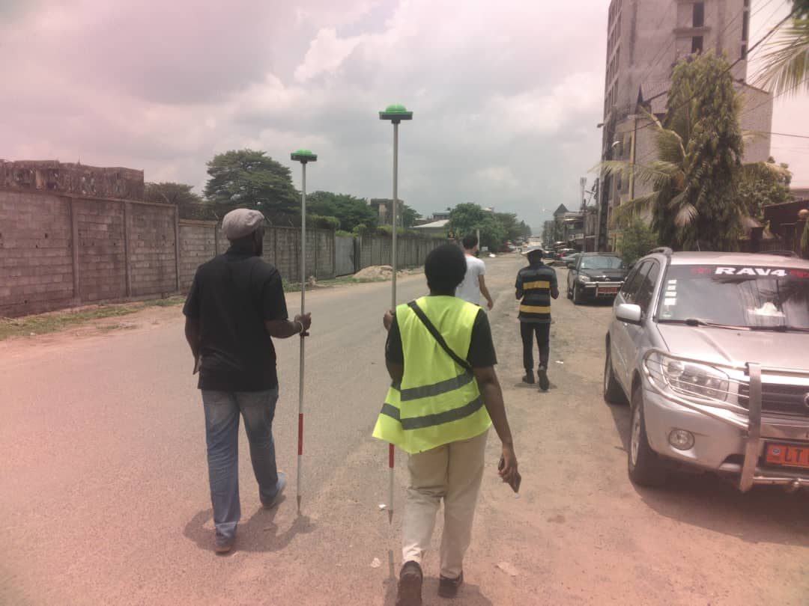
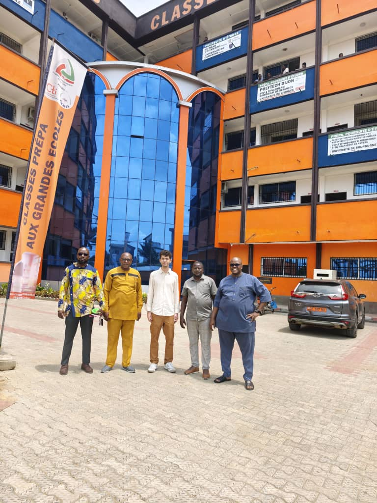

Monday, March 16 — Monday, March 31, 2026
Institut Universitaire de la Côte (IUC), Douala

From March 16 to March 31, 2026, Miguel Ureña travelled to Cameroon for a research and fieldwork visit in Douala and Fotouni.
The visit was part of a broader collaboration involving the Institut Universitaire de la Côte (IUC), Smart EFYL, the MIT Media Lab City Science Group, Universidad Politécnica de Madrid (UPM), and Frankfurt University of Applied Sciences (Frankfurt UAS).
The main objective was to explore how low-cost geospatial technologies and open data could support urban mapping, planning, and addressing in Cameroon. Fieldwork was conducted in both Douala and Fotouni by local students, producing two small pilot datasets that will be used to further develop and test the project's ideas and methodologies.
Two practical workshops were also held at IUC with around 20 students. The workshops introduced students to low-cost RTK GPS devices and provided hands-on training in collecting centimeter-level positioning data. A second part focused on processing and visualizing the collected data using the open-source GIS software QGIS.
The visit also included meetings with local researchers, professors, and students, as well as initial experiments on road-condition assessment and an OpenStreetMap-based addressing system. Together, these activities established the basis for further collaboration and future pilot projects in Cameroon.

Team
Miguel Ureña-Pliego, Stéphane Sergin Djueteu Lemofouet, Axel Emery Dountsop Teumené, Ange Mado Lowe Fomba, Merveille Erika Assonfack Sontong, Parfait Atchadé, Thierry Teuma, Sergio Álvarez Gallego, Luis Alonso Pastor, Miguel Marchamalo Sacristán, Jonas Hahn, Kent Larson, Willy Guimezap Kenou
Acknowledgements
Paul Guimezap and the Institut Universitaire de la Côte for institutional support and hosting; Bertin Nzoyin for driving and field logistics; Yvan De La Paix Melong Njoumangen for taking part in project meetings and workshops; Yann Zeutsop Tankoua for developing the Fotouni census mobile application; Robert Peugueu for video documentation of the fieldwork in Fotouni; Juan Morillo for developing the low-cost RTK GNSS hardware this project builds on; and the Chief of Fotouni and the Technical College of Fotouni for local hosting and support.